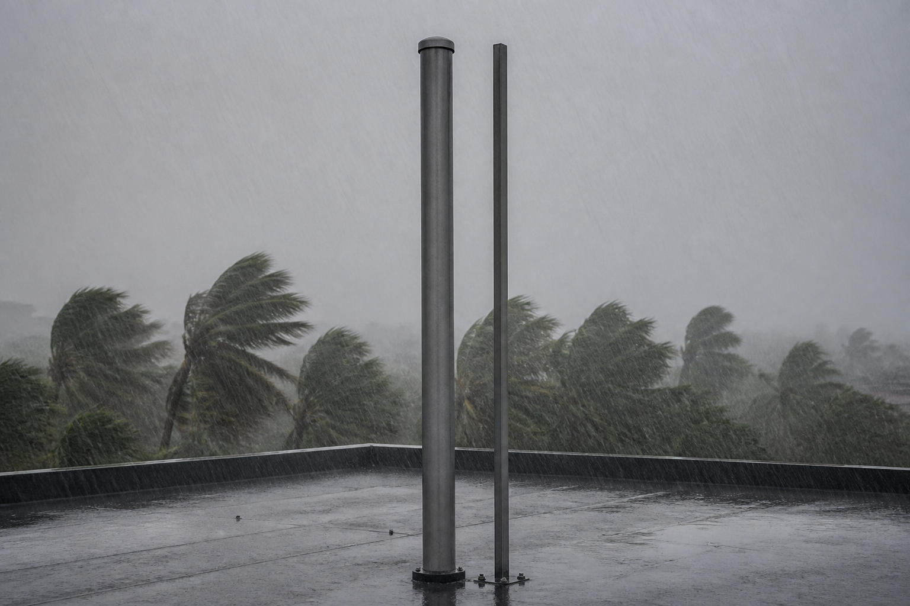

Ta mission : mettre en œuvre une simulation, et découvrir qu'elle ne répond qu'à la question que tu lui as posée.
🖥️ Ordinateur partagé (salle de techno, CDI) : un autre élève qui ouvre cette page sur la même session verra tes réponses.
Quand tu as fini : imprime en PDF si tu veux garder une trace, puis clique sur « 🗑 Effacer ma sauvegarde ».
| Code | Formulation officielle (programme 2024) | Où, dans cette séquence |
|---|---|---|
| 3e_C8.1 | Mettre en œuvre une simulation pour valider la tenue mécanique d’un matériau. | Activités 1 à 4 |
| 3e_C3.4 (appui) | Définir et mettre en œuvre un protocole pour mesurer une caractéristique, une performance d’un OST. | Activités 3 et 4 |
« Mettre en œuvre » veut dire : choisir le cas de charge, choisir la géométrie, choisir la limite de comparaison — puis assumer le résultat.
Référence normative : programme de technologie du cycle 4, BO n°9 du 29 février 2024. Codification opérationnelle : les codes 3e_C3.4 · 3e_C8.1 servent à ranger les séquences ; ils ne viennent pas du programme officiel.
Pour toi, sans note : coche ce qui est déjà en place. Sous chaque ligne, un lien pour le reprendre si tu n'en es pas sûr·e.
→ pas encore sûr·e ? relis « Plier ou casser : quelle est la différence ? » dans la synthèse 5e_C8.1
→ pas encore sûr·e ? relis « Que peut faire la simulation, et que ne voit-elle pas ? » dans la synthèse 5e_C8.1
→ pas encore sûr·e ? relis « Comment juger un résultat : validé ou non ? » dans la synthèse 4e_C8.1 à C8.3
Dans cette séquence : une simulation à la place du banc, et c'est toi qui la règles — le cas de charge, la géométrie, la limite à laquelle on compare. Tu choisis la question qu'elle doit trancher pour le mât de la station.
Un mot à garder en tête : mettre en œuvre une simulation, c'est choisir le cas de charge, la géométrie et la limite à laquelle on compare.
Le bureau d'études de la mairie a lu votre avis de l'an dernier. Il est d'accord avec la conclusion, et pas du tout avec la méthode.
« Vous avez poussé 100 N (newtons) en tête de chaque mât. Mais le cyclone ne pousse pas en tête : il pousse sur toute la hauteur, et il pousse d'autant plus fort que le mât est large. Votre banc a traité un tube de 50 mm et une barre de 20 mm exactement de la même façon. Le vent, lui, ne le fera pas. »
« Refaites le calcul. Vous avez une simulation. À vous de la régler. »

Comment régler une simulation pour qu'elle réponde à la question qu'on se pose vraiment ?
Le bureau d'études dit que le banc a été injuste. D'après toi, quel profilé le banc a-t-il le plus désavantagé, et lequel a-t-il le plus avantagé ? Personne ne corrige cette réponse : on la relira au bilan.
Une question par ligne du bloc « Avant de commencer ». Elles ne sont pas notées et ne comptent pas dans ta progression : elles te disent quoi relire avant de te lancer. « Je ne sais pas encore » est une réponse utile.
Il ne décide de rien tout seul. Il applique le cas de charge que tu choisis, sur la hauteur que tu choisis, et compare à la limite que tu choisis. Trois réglages, et le verdict change.
| Profilé | moment | σ | k | flèche | verdict |
|---|---|---|---|---|---|
| Règle les trois menus, puis lance la simulation. | |||||
profilés retenus : — · réglage : aucun
pression du vent : 1063 Pa (pascals) · coefficient exigé : 3 · flèche admise : 40 mm
Question directrice : réglée comme le banc, la simulation retrouve-t-elle son verdict — et peut-on alors lui faire confiance ?
Au programme : l'ouverture, puis refaire dire au calcul ce que le banc a dit (activité 1, environ 25 min). Avec l'ouverture, la séance tient dans 55 min.
Objectif : vérifier que la simulation est digne de confiance. Production : deux réponses justes. Ressource : le simulateur, plus haut, et tes relevés de 3e_C8.2.
Hauteur 2000 mm, cas poussée du banc, limite résistance à la rupture — exactement ce que faisait le banc l'an dernier. Lance la simulation.
Un instrument neuf se vérifie d'abord sur un cas dont on connaît déjà la réponse. Si la simulation, réglée exactement comme le banc, ne retrouvait pas le verdict du banc, il faudrait s'arrêter là et chercher pourquoi.
Réglée « poussée du banc + rupture », la simulation retient 1 profilé — le Tube aluminium Ø50 × 3 — et écarte les quatre autres, comme le banc de 3e_C8.2. C'est exactement ce qu'on attendait : on ne fait confiance à un instrument qu'après l'avoir vu retrouver une réponse connue.
Question directrice : que change au verdict le cas de charge — la poussée du banc ou le vent —, puis la limite à laquelle on compare ?
Au programme : le vent ne pousse pas comme le banc (activité 2, environ 35 min), puis à quelle limite compares-tu ? (activité 3, environ 25 min).
🏠 Peut se faire à la maison (sans matériel, sur téléphone)
Objectif : voir que la charge réelle dépend de la forme. Production : trois réponses justes. Ressource : le simulateur, réglé sur le vent.
Garde la hauteur à 2000 mm, passe le cas de charge à vent de 150 km/h, et relance. Compare la colonne « moment » avant et après.
| Profilé | Section | Moment sous la poussée du banc (en newtons-mètres) | Moment sous le vent |
|---|---|---|---|
| Tube aluminium Ø50 × 3 | ronde | 200 N·m | 204 N·m |
| Barre pleine acier Ø20 | ronde | 200 N·m | 128 N·m |
| Tube PVC Ø50 × 3 | ronde | 200 N·m | 204 N·m |
| Poutre bois 40 × 40 | carrée | 200 N·m | 298 N·m |
| Tube acier galvanisé Ø33,7 × 2,6 | ronde | 200 N·m | 163 N·m |
Le banc appliquait 100 N (newtons) à tout le monde, donc 200 N·m pour chacun. Le vent, lui, agit sur la surface offerte : moment = pression × coefficient de forme × largeur × hauteur² ÷ 2, plus l'effet du boîtier en tête.
Les tubes Ø50 reçoivent 204 N·m, tout près des 200 N·m du banc : pour eux, la poussée de 100 N était un bon substitut. Pour les autres, non.
🏠 Peut se faire à la maison (sans matériel, sur téléphone)
Objectif : choisir la limite, et savoir ce que ce choix change. Production : trois réponses justes. Ressource : le simulateur.
Hauteur 2000 mm, cas vent. Lance une fois avec résistance à la rupture, puis une fois avec limite élastique. Note le nombre de retenus à chaque fois.
Sur la rupture, 2 profilés passent : le Tube aluminium Ø50 × 3 et le Tube acier galvanisé Ø33,7 × 2,6. Sur la limite élastique, il n'en reste 1 : le Tube acier galvanisé Ø33,7 × 2,6 tombe à 2,7, sous le coefficient exigé de 3.
Choisir la rupture, c'est accepter un mât qui reste tordu après le premier coup de vent. Il ne sera pas par terre — il sera penché, et l'anémomètre lira un vent qui n'existe pas. Pour un instrument de mesure, plier est une panne complète.
Question directrice : quel réglage répond au cahier des charges, quel profilé retient-il — et qu'est-ce qu'aucun des deux instruments ne voit ?
Au programme : le bon réglage et ce qu'il ne voit pas (activité 4, environ 30 min), le réinvestissement sur le quai du port (environ 20 min), puis la synthèse, le Bonus, le bilan et le renvoi vers le QCM.
Décider, c'est revenir au cahier des charges de la mairie. Avant, trois minutes pour retrouver ce que dit chaque case d'une ligne, sur celle de la flèche en tête.
Ce que dit un cahier des charges, en trois mots : pour chaque fonction, un critère, un niveau et une flexibilité. Les mots de référence :
🐙 La leçon complète, avec un cahier des charges entier à compléter : l'atelier de 4e « Le diagramme des interacteurs extérieurs », exercice 6, « Le cahier des charges : critère, niveau, flexibilité », et son cours.
Complète cette ligne du cahier des charges du mât, directement dans le tableau : chaque case à menu attend une réponse.
✅ Tu as réussi si… les 5 cases justes, et tu sais dire pourquoi chaque piège ne va pas.
Remplis le tableau colonne par colonne. Pour chaque case, relis la définition du mot, juste au-dessus, dans « Les mots du cahier des charges ».
📌 À retenir : chaque fonction du cahier des charges (FP ou FC) a une désignation qui commence par un verbe à l'infinitif, un critère (ce qu'on mesure), un niveau (un nombre et son unité) et une flexibilité (l'écart que le client accepte, de F0 impératif à F3 très négociable).
⚠ Le piège classique : prendre le niveau (« au moins… ») pour le critère, écrire un niveau sans unité, ou choisir la flexibilité d'après l'importance de la fonction au lieu de l'écart que le client accepte.
Objectif : conclure, et nommer l'angle mort. Production : un profilé retenu et une réserve écrite. Ressource : le simulateur et le tableau ci-dessous.
| Hauteur | Retenus (vent + limite élastique) | Lesquels |
|---|---|---|
| 1200 mm | 2 | Tube aluminium Ø50 × 3, Tube acier galvanisé Ø33,7 × 2,6 |
| 1500 mm | 2 | Tube aluminium Ø50 × 3, Tube acier galvanisé Ø33,7 × 2,6 |
| 2000 mm | 1 | Tube aluminium Ø50 × 3 |
Le cahier des charges impose 2000 mm : la hauteur n'est pas une variable d'ajustement, c'est une contrainte de mesure. Gagner un profilé en descendant le mât serait gagner sur la mécanique en perdant sur la fonction.
Le Tube aluminium Ø50 × 3 est retenu, avec un coefficient de 3,4 et une flèche de 27 mm.
La simulation confirme le verdict du banc — mais elle a montré en chemin que la Barre pleine acier Ø20 avait été jugée sur une charge qu'elle ne recevra jamais, et que la Poutre bois 40 × 40 avait été jugée sur une charge trop faible. Le bon résultat obtenu par un mauvais raisonnement reste un mauvais raisonnement.
Et les deux instruments partagent le même angle mort : Le vent fait vibrer le mât des milliers de fois : c'est la fatigue. Ni le banc ni la simulation ne la voient — ils chargent une seule fois.
🏠 Peut se faire à la maison (sans matériel, sur téléphone)
La mairie veut installer le même type de mât sur le quai du port, où le vent de référence monte à 180 km/h.
q = ½ · ρ · V². En passant de 150 à 180 km/h, V est multipliée par 1,2 et la pression par 1,2² = 1,44. Les moments augmentent d'autant.
Et c'est la limite de ce simulateur : la vitesse du vent y est fixée à 150 km/h. Le réglage qui manque est celui dont on a besoin — savoir ce qu'un outil ne permet PAS de faire fait partie de sa maîtrise.
Le niveau attendu est le même : ces phrases donnent le départ, pas la réponse.
La flèche augmenterait. L'encastrement parfait du simulateur empêche le pied du mât de tourner. Une platine boulonnée dans un béton qui travaille un peu le laisse tourner d'un petit angle, et ce petit angle se multiplie par toute la hauteur. Le calcul : 0,5° au pied déplace la tête de 2 000 mm × tan 0,5° ≈ 2 000 × 0,0087 ≈ 17 mm, qui s'ajoutent à la flèche du tube.
Ce qui ne change pas : le moment au pied. Le vent pousse pareil, donc la contrainte dans le tube reste la même. C'est le critère de flèche qui se dégrade : au bon réglage (2 000 mm, vent, limite élastique), le simulateur donne 27 mm au tube aluminium ; avec la platine, 27 + 17 ≈ 44 mm, au-dessus des 40 mm admis.
Attendus : le sens (la flèche augmente) ; la raison (le pied tourne, et la rotation se multiplie par la hauteur) ; la conséquence pour la décision (c'est le critère de flèche qui est menacé, pas celui de rupture).
Erreurs typiques : « elle diminue, le béton amortit » — un appui qui cède ne retient pas mieux ; « le moment change » — il dépend du vent et de la hauteur, pas de la fixation ; oublier d'écrire dans l'avis que le simulateur suppose un encastrement parfait.
Le moment maximal monte au point d'attache du hauban, à mi-hauteur. Le hauban retient le mât à 1 000 mm. Au-dessus, la moitié haute travaille comme un petit mât de 1 m, poussée par le vent et par le boîtier : c'est à son pied, au point d'attache, que le moment est le plus grand.
Et il est bien plus petit. Les nombres du simulateur, pour le tube aluminium : la pression du vent vaut 1 063 Pa (pascals) ; le vent pousse le tube de 1 063 × 1,2 × 0,05 m ≈ 63,8 N (newtons) par mètre, et le boîtier de 1 063 × 1,2 × 0,03 m² ≈ 38,3 N.
Au point d'attache, la moitié haute fait 1 m : 63,8 × 1 × 0,5 ≈ 32 N·m (newtons-mètres) pour le tube, plus 38,3 × 1 ≈ 38 N·m pour le boîtier, soit environ 70 N·m. Sans hauban, au pied du mât de 2 m : 63,8 × 2 × 1 + 38,3 × 2 ≈ 204 N·m, le moment que le simulateur affiche. Environ trois fois moins, donc ; et le pied, lui, ne reçoit plus qu'un petit moment.
Attendus : l'endroit (au point d'attache du hauban) ; la raison (le bras de levier n'est plus que la moitié haute du mât) ; l'effet (le moment maximal diminue nettement).
Erreurs typiques : « il reste au pied » — le hauban a coupé le bras de levier en deux ; « il n'y a plus de moment du tout » — la moitié haute plie toujours ; oublier que le hauban tire en biais : il comprime le mât, et son ancrage sur le toit devient une pièce de plus à vérifier.
L'essai qui manque, c'est peser. Ni le banc ni la simulation ne pèsent le mât, alors qu'il faut le hisser sur le toit et le fixer en haut d'une échelle. Une ligne de protocole suffit : « peser chaque profilé retenu, coupé à la même longueur de 2 000 mm, sur la même balance, en kilogrammes ; à tenue égale, retenir le plus léger ».
Exemple : au vent et sur la rupture, deux profilés passent, le tube aluminium et le tube acier galvanisé. Pesés à 2 000 mm, le premier fait 2,39 kg et le second 3,99 kg (les masses de la correction de l'activité 1 de 3e_C8.2) : la pesée tranche pour l'aluminium.
Attendus : ce qu'on mesure (la masse, en kilogrammes) ; ce qui ne varie pas (la même longueur, la même balance) ; la règle de décision, écrite avant de peser.
Erreurs typiques : « refaire le même essai, plus fort » — les deux passent déjà, il ne les départage pas ; peser des morceaux de longueurs différentes ; « le plus lourd est le plus solide » ; écrire la règle de décision après avoir vu les masses.
Ton hypothèse du début : —
La réponse est écrite dans la correction de l'activité 2. L'avais-tu vue ?
Le niveau attendu est le même : ces phrases donnent le départ, pas la réponse.
Comment j'ai travaillé :
Le niveau attendu est le même : ces phrases donnent le départ, pas la réponse.
Les quatre niveaux sont ceux du livret scolaire :
maîtrise insuffisante · maîtrise fragile · maîtrise satisfaisante · très bonne maîtrise.
Aucun n'est une note : choisis celui qui décrit ce que tu fais aujourd'hui.
30 questions sur cette séquence, dont 4 illustrées. Tes réponses restent dans ce navigateur ; tu peux la refaire autant de fois que tu veux.
▶ Ouvrir le QCM (30 questions)